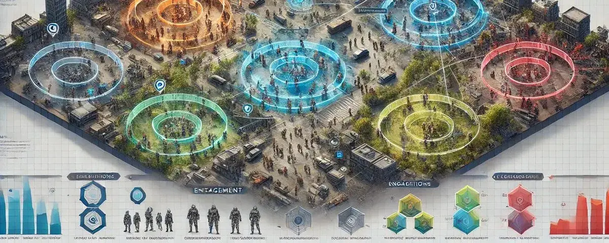

Situational Complexity in Massive Simulations
· Simulated Worlds series
Massive games and simulations face a fundamental challenge: Situational Complexity. This refers to the exponential difficulty of managing, scaling, and making coherent the countless dynamic interactions that can occur between players, NPCs, and the environment. As virtual worlds grow larger and more dynamic, this complexity threatens to overwhelm both computational resources and design frameworks.
Situational Complexity manifests in several critical ways:
- Exponential growth of possible interactions
- Cascade effects from localized events
- Resource allocation for processing social dynamics
- Coherence of narrative and gameplay across scales
- Management of attention and importance across multiple concurrent events
- Dynamic role assignment and behavior expectations
Traditional approaches like agent-based systems and encounter design handle pieces of this puzzle, but they often break down when confronted with the full scope of situational complexity in massive games.
Introducing Situation Design
Situation Design emerges as a higher-level framework for managing this complexity. Operating above the level of individual agents and encounter design, it provides a structured way to think about, design, and control the emergence and flow of dynamic events in massive games.
Core Concepts of Situation Design
1. The Situation Primitive
Unlike traditional encounter design, a Situation is a flexible, organic construct that defines:
- A sphere of influence with falloff properties
- A set of engagement slots for participants
- Rules for growth and contraction
- Interaction with other situations
2. Engagement Slots
- Dynamic role containers that actors can occupy
- Define behavioral expectations and permissions
- Scale with situation size and intensity
- Include primary and secondary action possibilities
3. Action Hierarchy
Actors within a situation can maintain:
- Primary actions that define their main role
- Secondary actions that add depth and naturalism
- Transitional states between roles
Implementation in Level Design
While Situation Design can operate organically through a world, it begins in level design:
Situation Anchors
- Physical locations primed for situation emergence
- Environmental supports for common situation types
- Resource allocation planning
Flow Planning
- Anticipating situation spread patterns
- Designing containment and growth boundaries
- Creating escalation and de-escalation paths
Resource Management
- Processing priority zones
- Attention management systems
- Computational resource allocation
Organic Growth and Propagation
One of the key strengths of Situation Design is its ability to handle organic growth:
Technical Architecture
Situation Design requires specific technical considerations:
Spatial Management
- Situation boundary tracking
- Influence falloff calculations
- Overlap handling
Role Management
- Dynamic slot creation/destruction
- Role transition handling
- Action validation and processing
Resource Scaling
- Priority-based processing
- Load balancing across situations
- Efficient state management
Integration with Existing Systems
Situation Design works alongside and enhances:
- Agent behavior systems
- Traditional encounter design
- Environmental interaction systems
- Quest and narrative systems
- Social simulation frameworks
Future Implications
As games continue to grow in scale and complexity, Situation Design becomes increasingly crucial for:
- Managing massive player counts
- Creating coherent emergent narratives
- Balancing computational resources
- Enabling more sophisticated social simulation
Conclusion
Situation Design is a high-level game design framework that manages situational complexity by treating interactions as organic, scalable “bubbles” of activity with definable roles, boundaries, and growth patterns, sitting above traditional agent and encounter systems to enable coherent social dynamics in massive games.
First published on X on April 10, 2025. Read the original.